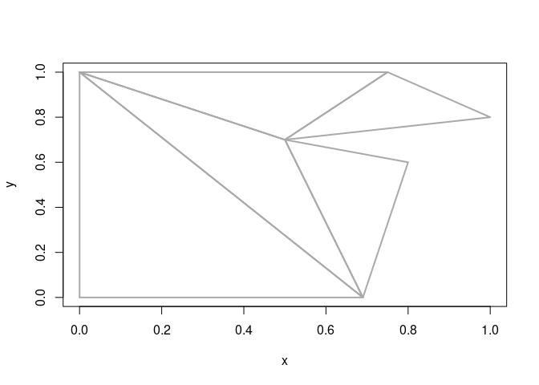

The goal of decido is to provide an R binding to the Mapbox library earcut.hpp for constrained polygon triangulation. Decido is aimed at package developers at the moment, there are not high-level classes or objects but the earcut functionality can be easily used in higher-level tools or just used directly.
Ear cutting (or ear clipping) applies constrained triangulation by successively ‘cutting’ triangles from a polygon defined by path/s. Holes are supported, the earcut library works with single-island-with-holes polygons, analogous to the POLYGON type in simple features.
Installation
Install the released version from CRAN.
install.packages("decido")You can install the development version from GitHub with the following code.
## install.packages("remotes")
remotes::install_github("hypertidy/decido")Example
This is a basic example of triangulating a single-ring polygon. The output is a vector of triplet indices defining each triangle.
library(decido)
x <- c(0, 0, 0.75, 1, 0.5, 0.8, 0.69)
y <- c(0, 1, 1, 0.8, 0.7, 0.6, 0)
earcut(cbind(x, y))
#> [1] 2 1 7 7 6 5 5 4 3 2 7 5 5 3 2See the documentation and vignette for more.
Open the getting started vignette.
vignette("decido", package = "decido")Motivation
Triangles can be addictive once you get used to them and can really focus attention on how simple things work. I love this sneaky trick for turning a set of unique coordinates into a picture with basic array, plot, and index idioms.
library(decido)
x <- c(0, 0, 0.75, 1, 0.5, 0.8, 0.69)
y <- c(0, 1, 1, 0.8, 0.7, 0.6, 0)
idx <- earcut(cbind(x, y))
## idx is triplets of indices into x,y
plot(cbind(x, y)[rbind(matrix(idx, nrow = 3)[c(1:3, 1), ], NA), ], type = "l", lwd = 2, col = "darkgrey")
The need for polygon triangulation was originally motivated by the topology aspirations of silicate needing tools for decomposing shape data into primitives for analysis and visualization. Decomposition into graph types is already well supported and exercised, but triangulations of paths versus triangulations from edges are two key facilities needed for greater control.
This broader project is fairly well advanced in silicate which provides ear-cutting triangulations and enhanced with high-quality methods in hypertidy/anglr.
To triangulate sf polygons see function here. For high-quality triangulations of sf polygons directly see sfdct.
Other implementations
Ear clipping (or ear cutting) is also available in the rgl function triangulate (implemented in R), and in the lawn function lawn_tesselate (implemented via the Mapbox Javascript library earcut). In rgl the function also classifies input coordinates according to their nesting, a necessary first step if the relationship between holes and islands is not known. The INLA package has some kind of constraint-based triangulation, but I don’t yet know the details.
In comparison to path-based ear-clipping, other libraries ‘Triangle’ and ‘CGAL’ provide edge-based mostly Delaunay triangulation. The Triangle library is available in the R package RTriangle, for spatial formats in the anglr, and in a limited sf wrapper in sfdct.
The best prospects for high-quality trianguation is probably the CGAL library, and this now available to R via the cgalheaders package, similarly used in the prepair package.
Older experimental implementations binding CGAL are in rcgal and laridae.
There’s an interesting new package terrainmeshrfor triangulating rasters based on the hmm library, this is leveraged in the dev-version of the anglr.
Do you know of others? Let me know! Triangulation is common across many R packages, but constrained algorithms are pretty rare (it’s hard). There are many Delaunay and other non-constrained implementations in many packages, and I’m compiling a list of those as well. OTOH there’s rgeos, sf, deldir, geometry, tripack, spatstat, akima, several mesh-related packages Rvcg, meshsimp, icosa, webglobe …
There’s a rough and old benchmark here: https://rpubs.com/cyclemumner/416456
Please note that the decido project is released with a Contributor Code of Conduct. By participating in this project you agree to abide by its terms.